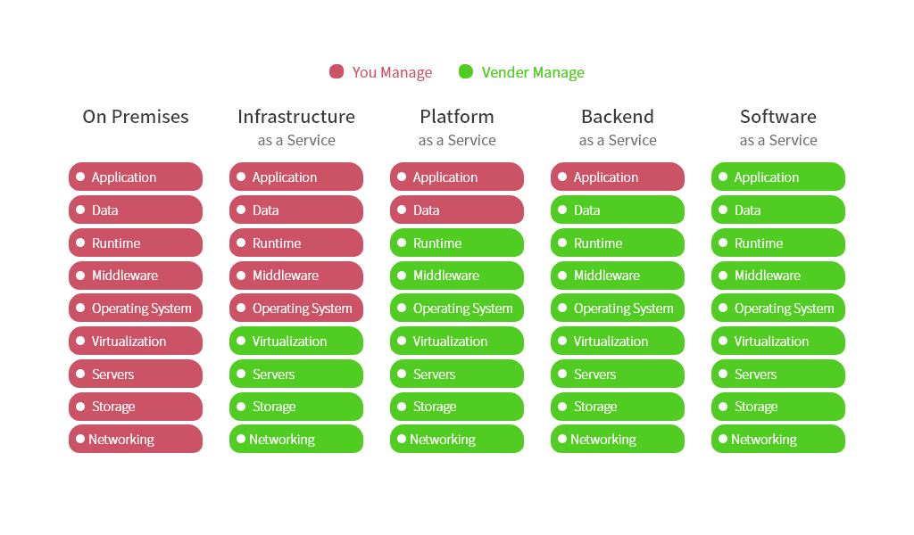

IaaS PaaS SaaS BaaS Faas
aaS 是 As-a-Service 即为服务 的意思。

IaaS (Infrastructure as a Service)
服务商提供底层/物理层基础设施资源（服务器，数据中心，环境控制，电源，服务器机房），客户自己部署和执行操作系统或应用程序等各种软件。
PaaS (Platform as a Service)
服务商提供基础设施底层服务，提供操作系统（Windows，Linux）、数据库服务器、Web服务器、域控制器和其他中间件，以及服务模型中的备份服务等中件层服务。例如IIS，.NET，Apache，MySQL ...，客户自己控制上层的应用程序部署与应用托管的环境。
BaaS(Backend as a Service)
后端即服务
服务商为客户(开发者)提供整合云后端的服务，如提供文件存储、数据存储、推送服务、身份验证服务等功能，以帮助开发者快速开发应用。
SaaS (Software as a Service)
服务商提供基于软件的解决方案，满足客户最终需求；如OA、CRM、MIS、ERP、HRM、CM、Office 365、iCloud、G Suite等应用，客户不需考虑任何形式的专业技术知识，获得完整的软件包，使他们的日常工作和生活变得更轻松。
FaaS(Function as a service)
函数即服务
无服务器计算，当前使用最广泛的是AWS的Lambada。
服务商提供一个平台，允许客户开发、运行和管理应用程序功能，而无需构建和维护通常与开发和启动应用程序相关的基础架构的复杂性。 按照此模型构建应用程序是实现“无服务器”体系结构的一种方式，通常在构建微服务应用程序时使用。
DaaS(Data as a service)、NaaS(Network as a service) 就不展开了。